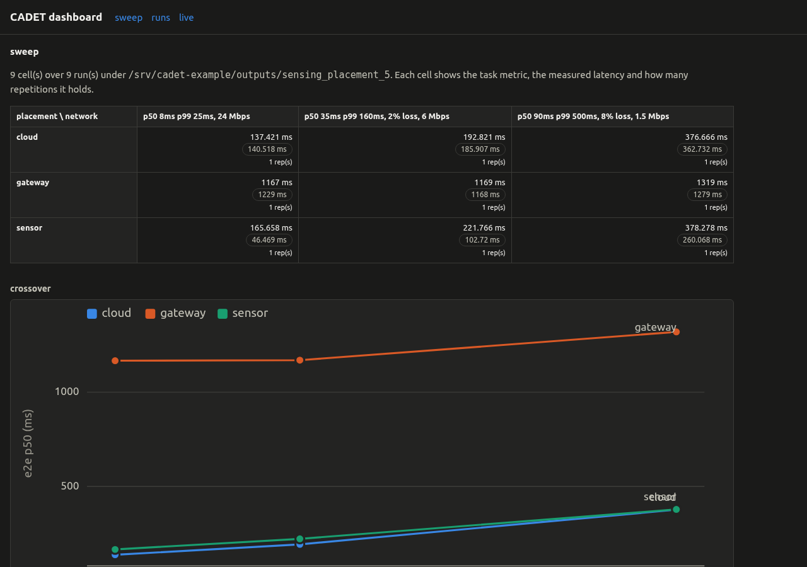
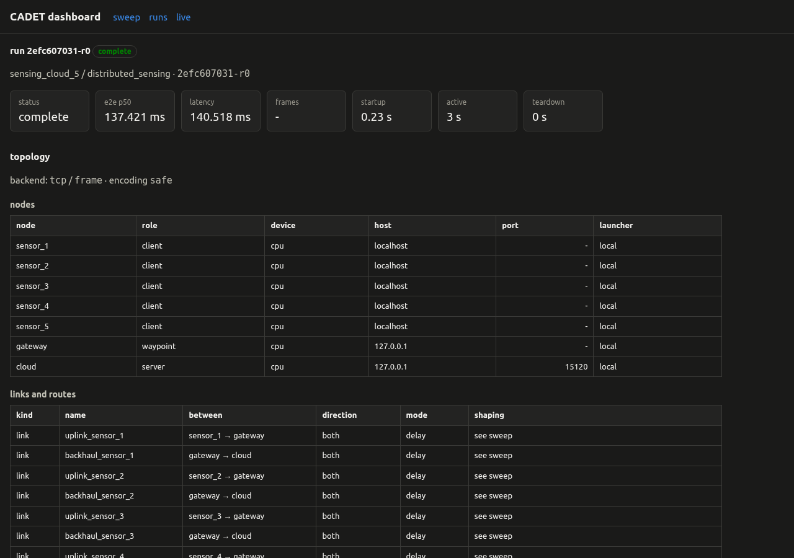

Distributed Sensing¶
N sensor nodes stream frames over a contested access network into one gateway; the detector runs on each sensor, on the gateway, or in the cloud. The example measures what that placement choice costs in latency, age of information, and bytes on the access link.
What it measures¶
Four quantities per run:
End-to-end latency — from a frame’s capture on a sensor to the detection result arriving back at it
Age of information — from a frame’s capture to its arrival at the node that processes it
Detection rate — fraction of frames whose result carried at least one box
Bytes per link — payload each sensor put on its uplink; the placement decides whether that payload is boxes or an encoded frame
The fan-in is what the comparison turns on. Every sensor is its own process with its own connection, and the processing node holds one detector behind one queue, so N sensors share one compute budget while each sensor has its own.
Quick run¶
Two synthetic sensors, one gateway, no CARLA, no download:
cadet run examples/distributed_sensing/quick.yaml --app-module examples.distributed_sensing.app
Result : 40 of 40 frames answered, median end-to-end latency 88.9 ms, median age of information 42.2 ms, 2.4 s of worker time.
The full matrix¶
The configs split across two dimensions the sweep machinery cannot handle as a single axis: sensor count changes the node and link lists together (not a dotted-path axis), and placement changes the topology (the cloud placement adds a waypoint node). Each combination is its own file.
Config |
Topology |
Sensors |
Sweeps |
Backend |
|---|---|---|---|---|
|
sensors → gateway |
2 |
none |
delay |
|
sensors → gateway |
2, 5, 10 |
placement × access quality (3) |
delay |
|
sensors → gateway → cloud |
2, 5, 10 |
access quality (3) |
delay |
|
sensors → gateway |
5 |
placement × access quality (3) |
netem (packet-level) |
|
sensors → gateway |
5 |
placement × access quality (3) |
delay, freshness policy on |
|
as |
5 |
as |
delay |
|
Wi-Fi cell → gateway |
5 |
none |
netwaggle, one Wi-Fi cell |
|
sensors → gateway |
5 |
access quality (3) |
netwaggle wired (emulation container) |
netem_5.yaml uses the same topology and swept axes as edge_5.yaml but
shapes at the packet level (netem) rather than the message level. Comparing the
two shows what TCP retransmit costs at each condition. queue_5.yaml adds a
freshness policy on the gateway’s inbound queue; comparing it cell-by-cell with
edge_5.yaml isolates the effect of letting stale frames queue.
The edge configs below show the full topology and sweep definition:
examples/distributed_sensing/edge_5.yaml¶# Detector placement at the edge of a 5-sensor cell: the detector runs on every
# sensor, or on the gateway the sensors associate with. The sweep crosses those
# two placements with three access-link qualities, so each run differs from its
# neighbours along one axis and nothing else.
#
# The access links are declared one per sensor with identical parameters. The
# cell is one access network, and the server runtime applies the path into the
# gateway to every inbound connection, so a per-sensor parameter would not be
# read. The swept value is therefore the whole `links` list: sweeping one link's
# fields would leave the other entries stating a quality no run measured.
extends: _base.yaml
experiment: {name: sensing_edge_5, max_active_s: 600.0}
nodes:
- {name: sensor_1, host: localhost, role: client, device: cpu}
- {name: sensor_2, host: localhost, role: client, device: cpu}
- {name: sensor_3, host: localhost, role: client, device: cpu}
- {name: sensor_4, host: localhost, role: client, device: cpu}
- {name: sensor_5, host: localhost, role: client, device: cpu}
- {name: gateway, host: 127.0.0.1, port: 15110, role: server, device: cpu}
# The access quality a plain run uses; the sweep below replaces the whole list.
links:
- name: uplink_sensor_1
from: sensor_1
to: gateway
direction: both
network: &good
mode: delay
distribution: {kind: lognormal, p50_ms: 8.0, p99_ms: 25.0}
loss: 0.0
bandwidth_mbps: 24.0
- {name: uplink_sensor_2, from: sensor_2, to: gateway, direction: both, network: *good}
- {name: uplink_sensor_3, from: sensor_3, to: gateway, direction: both, network: *good}
- {name: uplink_sensor_4, from: sensor_4, to: gateway, direction: both, network: *good}
- {name: uplink_sensor_5, from: sensor_5, to: gateway, direction: both, network: *good}
sweep:
axes:
app.params.placement: [sensor, gateway]
links:
- - {name: uplink_sensor_1, from: sensor_1, to: gateway, direction: both, network: *good}
- {name: uplink_sensor_2, from: sensor_2, to: gateway, direction: both, network: *good}
- {name: uplink_sensor_3, from: sensor_3, to: gateway, direction: both, network: *good}
- {name: uplink_sensor_4, from: sensor_4, to: gateway, direction: both, network: *good}
- {name: uplink_sensor_5, from: sensor_5, to: gateway, direction: both, network: *good}
- - name: uplink_sensor_1
from: sensor_1
to: gateway
direction: both
network: &contested
mode: delay
distribution: {kind: lognormal, p50_ms: 35.0, p99_ms: 160.0}
loss: 0.02
bandwidth_mbps: 6.0
- {name: uplink_sensor_2, from: sensor_2, to: gateway, direction: both, network: *contested}
- {name: uplink_sensor_3, from: sensor_3, to: gateway, direction: both, network: *contested}
- {name: uplink_sensor_4, from: sensor_4, to: gateway, direction: both, network: *contested}
- {name: uplink_sensor_5, from: sensor_5, to: gateway, direction: both, network: *contested}
- - name: uplink_sensor_1
from: sensor_1
to: gateway
direction: both
network: &severe
mode: delay
distribution: {kind: lognormal, p50_ms: 90.0, p99_ms: 500.0}
loss: 0.08
bandwidth_mbps: 1.5
- {name: uplink_sensor_2, from: sensor_2, to: gateway, direction: both, network: *severe}
- {name: uplink_sensor_3, from: sensor_3, to: gateway, direction: both, network: *severe}
- {name: uplink_sensor_4, from: sensor_4, to: gateway, direction: both, network: *severe}
- {name: uplink_sensor_5, from: sensor_5, to: gateway, direction: both, network: *severe}
One-command placement sweep¶
placement_sweep.py runs the full three-placement comparison in one command:
python examples/distributed_sensing/placement_sweep.py --sensors 5
That shells out to cadet sweep for the edge and cloud configs, reduces
every run to one row in outputs/sensing_placement_5/summary.csv, prints the
table, and writes the crossover plot to
outputs/sensing_placement_5/crossover.png. Takes about 75 s for five sensors.
While it is running, open the dashboard in another terminal:
cadet dashboard outputs/sensing_placement_5
The dashboard’s live view refreshes the sweep matrix as runs complete. After the sweep finishes, the same command shows the full matrix and crossover plot.
Manual sweep¶
To drive the two sweeps separately:
cadet sweep examples/distributed_sensing/edge_5.yaml --app-module examples.distributed_sensing.app
cadet sweep examples/distributed_sensing/cloud_5.yaml --app-module examples.distributed_sensing.app
python examples/distributed_sensing/summarise.py --write outputs/sensing_edge_5/distributed_sensing/*-r0
cadet dashboard outputs/sensing_edge_5
summarise.py --write writes sensing_summary.json into each run directory;
the dashboard reads every *_summary.json under the tree and takes the first
numeric field (e2e_p50_ms) as the headline metric.


Dashboard sweep view from python examples/distributed_sensing/placement_sweep.py --sensors
5: placement × access-quality matrix (9 cells, 2 reps each) and crossover
plot. Cloud and sensor placements stay well below the gateway, which saturates
at five sensors and holds its latency nearly flat as access quality degrades.¶


Per-run view for the cloud placement: node table (gateway as waypoint, cloud as server), per-sensor uplink and backhaul link table, and per-stage latency. The waypoint role is what distinguishes the cloud topology from the edge one in the dashboard.¶
Results¶
Measured on a single host with the delay backend, 5 sensors, 20 generated
frames per sensor at 10 fps. Latencies
are the median over answered frames of all five sensors.
Placement × access quality, 5 sensors:
Placement |
e2e p50, good |
e2e, contested |
e2e, severe |
AoI p50, good |
AoI, contested |
AoI, severe |
Uplink |
|---|---|---|---|---|---|---|---|
sensor |
138.0 ms |
202.3 ms |
415.5 ms |
128.9 ms |
158.7 ms |
234.6 ms |
16.3 KB |
gateway |
1097.8 ms |
1126.3 ms |
1217.8 ms |
1043.6 ms |
1012.6 ms |
1030.8 ms |
52.0 KB |
cloud |
96.5 ms |
164.7 ms |
325.6 ms |
41.8 ms |
72.8 ms |
132.7 ms |
52.0 KB |
The gateway placement is over capacity: five sensors at 10 fps offer 50 frames
per second; one gateway detector at 40 ms per frame serves 25 (both numbers from
_base.yaml). The cloud detector at 12 ms per frame serves 83 and stays ahead
of the offered load.
Placement × sensor count, good access quality:
Sensors |
sensor |
gateway |
cloud |
|---|---|---|---|
2 |
140.7 ms |
69.0 ms |
89.5 ms |
5 |
138.0 ms |
1097.8 ms |
96.5 ms |
10 |
138.2 ms |
2688.3 ms |
377.5 ms |
The sensor placement is flat across all three counts: each sensor runs its own detector and its own source loop, so adding sensors adds independent workers rather than queue depth. At two sensors the gateway wins because detector cost dominates and the gateway’s is lower; by five sensors the gateway has saturated.
The replay config (20 cached COCO images per sensor) sharpens the bytes comparison: sensor placement put 14.9 KB on the five uplinks, gateway placement put 6752 KB — a factor of 453 — and gateway median end-to-end latency at good access quality was 1301.2 ms vs the sensor run’s 138.5 ms.
Network model¶
Three access quality tiers:
Quality |
|
|
|
|
|---|---|---|---|---|
good |
8 |
25 |
0 |
24 |
contested |
35 |
160 |
0.02 |
6 |
severe |
90 |
500 |
0.08 |
1.5 |
Cloud configs add a fixed backhaul at p50_ms: 25, p99_ms: 90,
loss: 0.005, bandwidth_mbps: 50, and sweep the access quality, so a
cloud run and an edge run at the same quality differ in path and not in the
swept axis.
Detector cost is a config input (app.params.detect_ms in _base.yaml):
120 ms per frame on the sensor, 40 ms on the gateway, 12 ms in the cloud. The
shipped configs use detector: stub, which pays that cost and returns a box
count derived from the frame’s bytes; set detector: yolo to resolve a real
model through the model registry instead.
Metrics and output files¶
Each run writes to outputs/<experiment>/distributed_sensing/<run_id>/:
sensor_<id>_events.csv— one per sensor; columns:capture_time,send_time,bytes_sent,sensor_detect_ms,remote_detect_ms,detections,aoi_ms,reply_time,e2e_latency_ms,round_trip_msarrivals_<config_hash>.csv— one per run; columns:arrival_time,aoi_ms,bytes_in,detections,detect_ms,detected_herelink_report_<node>.json— written by the framework; configured link parameters beside per-message latencies
Age of information needs no new collector. The sensor stamps its capture time
into the payload; the processing node stamps arrival; the difference is written
to arrivals_<config_hash>.csv and returned to the sensor. This holds because
every role in one run shares the host clock. For runs spread across hosts, add
metrics.collectors: [clock_offset] to correct the timestamps.
examples/distributed_sensing/placement_sweep.py writes sensing_summary.json into each
run directory automatically. The dashboard reads every *_summary.json
under the runs directory and takes the first numeric field (e2e_p50_ms)
as the headline metric.
To reduce runs from a manual sweep:
python examples/distributed_sensing/summarise.py --write outputs/sensing_edge_5/distributed_sensing/*-r0
cadet dashboard outputs/sensing_edge_5
Stop the dashboard with Ctrl-C.
Two-machine run¶
examples/distributed_sensing/two_host.yaml runs the same example across two machines:
sensors stay on the local host (as processes), the gateway runs in a container
on a second machine via the ssh_docker launcher. The three values that name
the second machine are passed on the command line so the config itself stays
environment-agnostic:
cadet run examples/distributed_sensing/two_host.yaml --app-module examples.distributed_sensing.app \
--set nodes.2.host=<address> \
--set nodes.2.user=<account> \
--set nodes.2.ssh_identity=/path/to/private/key
Run from a host account, not from scripts/cadet: the orchestrator
authenticates as the invoking account using that account’s own SSH key, and a
key does not belong inside a container image.
The second machine needs: a docker daemon its account can use, the cadet:dev
image, and the orchestrator’s public key in that account’s authorized_keys.
No repository checkout and no CADET install are required on the second machine.
two_host.yaml enables all five device collectors plus
clock_offset:
metrics:
collectors: [cpu, gpu, energy, bandwidth, clock_offset]
The clock_offset collector records the difference between the two hosts’
clocks rather than correcting it, so a cross-machine interval can be read with
that uncertainty carried.
Dataset for replay¶
examples/distributed_sensing/fetch_frames.py downloads 20 COCO val2017 images into
datasets/distributed_sensing/coco-val2017 (excluded from git). The fetcher reads the
archive in stream order and stops after enough images, so 20 images cost
3.5 MB of the 778 MB archive:
python examples/distributed_sensing/fetch_frames.py --limit 20
cadet sweep examples/distributed_sensing/replay.yaml --app-module examples.distributed_sensing.app
What each config needs¶
wifi_5.yamlneeds the emulation container with the wireless stack:mac80211_hwsimloads into the host kernel (a global change on a shared machine). The topology is generated and validated correctly, but the wireless backend is topology-verified and not run; see the README.emulated_5.yamlneeds the emulation container too, but only for openvswitch and sch_netem (no wireless stack change). Run withcadet emulate; a plaincadet runapplies no shaping.Composed routes do not model shared backhaul contention.
realise: composegives one end-to-end connection per sensor whose hops’ delays add; the N paths in a cloud config do not contend for one backhaul queue.
Features used¶
All features used by the single-host configs are marked Supported in
cadet/config/implemented.py:
source.kind: syntheticandreplaynodes.launcher: locallinks.network.mode: delay(sweeping configs);netem(netem_5.yaml)netwagglewithmedium: wifi(wifi_5.yaml); wired medium (emulated_5.yaml, requires emulation container)routes.realise: compose(cloud configs)transport.protocol: tcp,transport.mode: frame
two_host.yaml additionally uses launcher: ssh_docker for a real
second machine.
See also¶
Distributed Sensing — the research question and how to extend the example
Tutorial 6: Write an App Plugin — writing an app plugin
NetWaggle Layer — network backend reference
Configure link distributions — loss and delay parameters